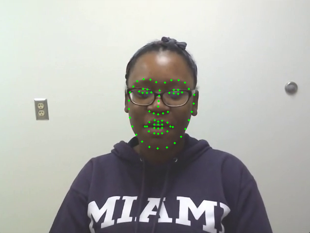

The main purpose of the project is to classify from video data whether an individual is lying and to extract key frames from the video and analyze the extracted expression to achieve algorithmic explainability. Detecting when a person is lying through a rigorously-tested AI model can play a significant role in judicial and legal settings, where an individual’s demeanor and facial expressions can indicate whether or not they are telling the truth.
From an objective standpoint, the AI is highly unlikely to discriminate or bias, but rather classify whether or not the defendant (or accuser) is lying when under question. Regarding a criminal case, it is immediately apparent the advantages of a lie detector in determining the innocence or guiltiness of the accused in a court of law. Theoretically, the lie detector AI can play a considerable role in any political, economic, or medical institution, including holding a presidential candidate accountable to the information they may claim in a debate or the credibility of any doctors when under question of their practice.
Example video input
Prediction output:
The person is predicted to be truthful.
The model has 61.77% confidence, and the prediction is correct!
The predicted label is tensor([[1.]], the true label is tensor([1.]).
Model attention layers: Attention(
(to_qkv): Linear(in_features=192, out_features=576, bias=False)
(to_out): Sequential(
(0): Linear(in_features=192, out_features=192, bias=True)
(1): Dropout(p=0.0, inplace=False)
)
)
Attention weights shape: (105,)
Top 4 significant attention frames: [50, 62, 82, 74]
Corresponding weights: [0.00953582, 0.00953374, 0.0095327, 0.00953227]
Methodology:
The ViViT model first extracts spatial-temporal tokens from the input video by embedding, which are then encoded by a series of transformer layers. The model then uses several variations of attention to factorize the large spatial and temporal dimensions of the video. Specifically, it uses a factorized encoder layer, a factorized self-attention layer, or a factorized dot-product layer. In our case, we primarily use a factorized self-attention layer. This allows us to effectively train and regularize the model when the datasets are not large enough.
Problem with sampling key frames in ViViT:
While ViViT achieved good results on video classification, however, the two methods used to sample frames --1) uniform sampling: Uniformly sampling picture frames from the video with fixed time span and dividing into image patches; 2) Tubelet embedding: selecting fixed time span of patches in frames into embeddings, are both arguably flawed for capturing transient frames such as micro expressions. Uniform sampling has no guarantee of capturing the exact high-relevance frames, and Tubelet embedding can result in low attention weights of tubes containing high-relevance frames because of additional low-relevance expressions. As a result, we would like to improve the sampling process to obtain more relevant key frames.
Improving key frame sampling through facial action unit tracking:
Instead of sampling key frames by uniform sampling and Tubelet embedding, we use a technique called Facial Action Unit (FAU) tracking. A FAU is a term used in facial expression analysis and the study of human facial movements. It was introduced by psychologists Paul Ekman and Wallace V. Friesen as part of their Facial Action Coding System (FACS). We can calculate FAU intensity using facial landmarks. Higher FAU intensity means higher likelihood of micro expressions. In the context of lie detection, micro expressions can be a good indicator of whether the person is lying. Thus, by sampling key frames with high intensity, we can capture frames more relevant to the prediction.

Here is how FAU based frame sampling works. At first, "get_frontal_face_detector" function from the dlib library was utilized to detect faces in the frames. Then "shape_predictor_68_face_landmarks" was applied as a predictor to identify 68 points along the contour of the face (Figure 3). Using these landmarks, 10 facial action units such as inner brow raiser, outer brow raiser, brow lowerer, cheek raiser, eye lid tightener, nose wrinkler lip corner puller, lip corner depressor, and lip part were calculated to track facial actions.A signal was obtained for each FAU. The "find_peaks_cwt" function from the scipy.signal library was used to detect peaks.
From 10 FAUs, we got 10 sets of peaks. Next, we identified the unique peaks from all 10 sets. Finally, we filtered the unique peaks by selecting one peaks for 5 consecutive frames.
Framework:
The video is processed through FAU, then the high intensity frames are extracted for the ViViT model, each video sample is represented as a 4-dimensional array [frame_num, height, width,channel], where frame numbers are padded to the maximum length. By using the vision transformer architecture, we are allowing inputs of different temporal lengths, which makes the framework flexible. Lastly, the ViViT outputs a percentage prediction that predicts the veracity label of a given video.
Result and Discussion:
The final accuracy of our model is around 59 percent. This is not an ideal result, but we have some theory on what the underlying issue is. First, since almost no body language is involved in all the videos, the only useful insight we can extract from each frame is the person’s expressions. And because expressions are mostly micro compared to pronounced ones like crying or laughing, the difference between each frame is relatively small. This means even though FAU tries to sample frames with most insights, the number of pixels in each frame that are useful is still very small. Useful pixels could be buried by the large number of non-insightful pixels in the frame. Second, our dataset of 321 videos is very small compared to what’s used in state-of-the-art models. If we were to artificially inflate the sample size using bootstrapping, there could be even more overfitting. It is rather difficult to properly train the weights when the sample size is very small compared to the number of parameters—the degree of freedom for parameters is just too large. In an ideal scenario, we would be fine tuning the model from some pre-trained weights. Unfortunately, ViViT is quite new and there aren’t pre-trained weights available.
Future Work:
We believe the issues discussed above likely contributed to the non-ideal performance of our mode. And we are confident that model accuracy will significantly improve. Specifically, if we can develop some algorithm to only capture pixels where micro-expressions are present and discard the rest “static” pixels, the model could extract more insight. And if we have the compute resources and dataset to train the model on a large set of videos (preferably more than 10k), we could have accuracy level comparable to that of commercial models. We feel those are out of the scope of this course, but we are excited to explore more in the future.